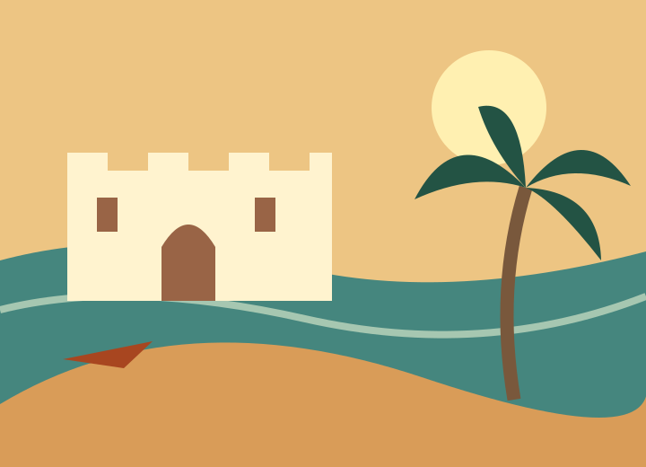

Follow the coast
Explore Cape Coast and make time to learn about its history.
Plan a visit →AKWAABA · WELCOME TO GHANA
Discover forest trails, coastal history and flavours worth slowing down for. Start with a place, then make the journey your own.
Find your next stop →
YOUR JOURNEY STARTS HERE
Explore Cape Coast and make time to learn about its history.
Plan a visit →Enjoy the forest atmosphere at Kakum or a garden walk in Aburi.
Plan a visit →Discover Ghana through local food, markets and shared meals.
Plan a visit →